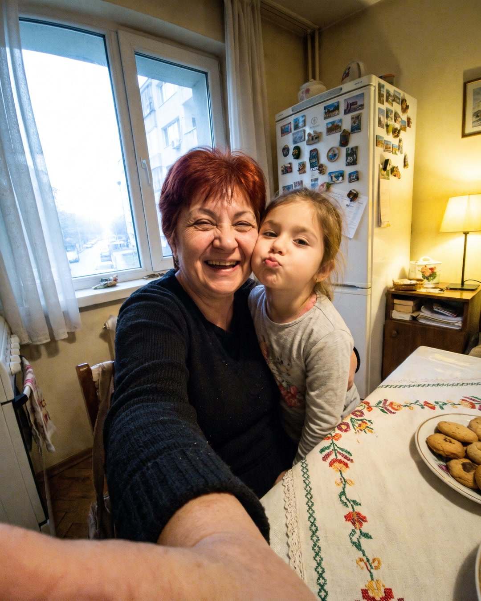
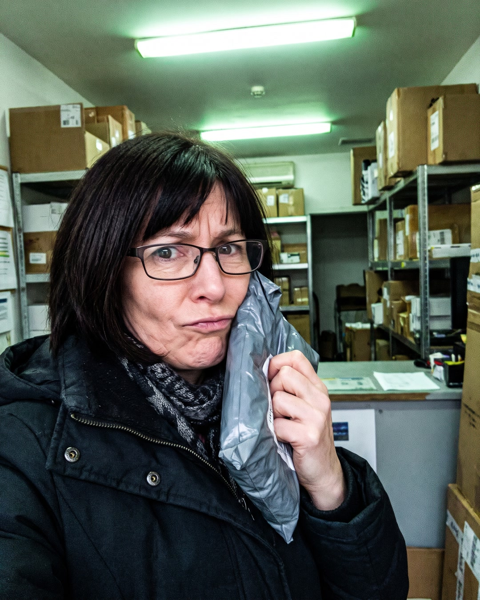
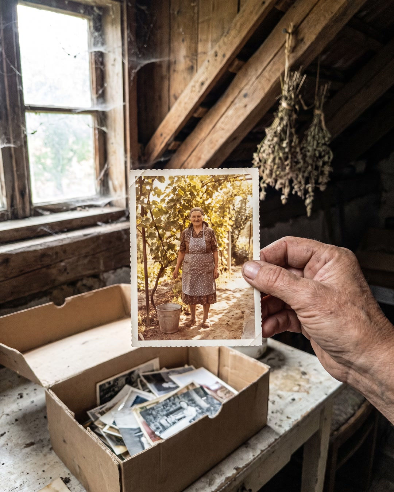

<title>FitPatches Native Letters</title>
<meta name="claude:viewport-fit-sides" content="cover">
<link rel="preconnect" href="https://fonts.googleapis.com">
<link rel="preconnect" href="https://fonts.gstatic.com" crossorigin>
<link rel="stylesheet" href="https://fonts.googleapis.com/css2?family=Literata:opsz,wght@7..72,600;7..72,700&family=Onest:wght@400;500;600&display=swap">
<style>
/* Layout: a review desk. Each ad is a phone-width feed post on the left and its settings + copy tools on the right; stacks on phones. */
:root {
  --bg: #F7F3F4; --surface: #FFFFFF; --ink: #22191C; --muted: #6E6266; --line: #E6DCDF;
  --accent: #A3304F; --accent-soft: #F8DDE5; --feed: #F0F2F5; --link: #E4E6EB;
  --display: "Literata", Georgia, "Times New Roman", serif;
  --body: "Onest", system-ui, -apple-system, "Segoe UI", sans-serif;
  --fb: system-ui, -apple-system, "Segoe UI", Roboto, Helvetica, Arial, sans-serif;
}
@media (prefers-color-scheme: dark) { :root:not([data-theme="light"]) {
  --bg: #161113; --surface: #1F181B; --ink: #F1E9EC; --muted: #AC9FA4; --line: #362B2F;
  --accent: #F08FAA; --accent-soft: #3E2430; --feed: #18191A; --link: #3A3B3C; color-scheme: dark } }
:root[data-theme="dark"] {
  --bg: #161113; --surface: #1F181B; --ink: #F1E9EC; --muted: #AC9FA4; --line: #362B2F;
  --accent: #F08FAA; --accent-soft: #3E2430; --feed: #18191A; --link: #3A3B3C; color-scheme: dark }
* { box-sizing: border-box }
body { background: var(--bg); color: var(--ink); font: 15px/1.6 var(--body); }
.wrap { max-width: 1100px; margin: 0 auto; padding-block: 28px 64px;
  padding-left: max(16px, env(safe-area-inset-left, 0px)); padding-right: max(16px, env(safe-area-inset-right, 0px)); }
h1, h2 { font-family: var(--display); font-weight: 700; text-wrap: balance; margin: 0; letter-spacing: -0.01em }
h1 { font-size: clamp(28px, 4.6vw, 42px); line-height: 1.12 }
h2 { font-size: clamp(22px, 3.2vw, 28px); line-height: 1.2 }
h3 { font: 600 12px var(--body); text-transform: uppercase; letter-spacing: .08em; color: var(--muted); margin: 22px 0 8px }
.eyebrow { font: 600 12px var(--body); text-transform: uppercase; letter-spacing: .1em; color: var(--accent); margin: 0 0 10px }
.lede { max-width: 66ch; color: var(--muted); margin: 14px 0 0 }
.method { margin-top: 26px; display: grid; grid-template-columns: repeat(auto-fit, minmax(230px, 1fr)); gap: 12px }
.step { background: var(--surface); border: 1px solid var(--line); border-radius: 10px; padding: 14px 16px; min-width: 0 }
.step b { display: block; font-weight: 600; margin-bottom: 4px }
.step span { color: var(--muted); font-size: 14px }
.ad { margin-top: 56px; display: grid; grid-template-columns: minmax(0, 400px) minmax(0, 1fr); gap: 20px 36px; align-items: start }
.adhead { grid-column: 1 / -1; display: flex; flex-direction: column; gap: 8px }
.tag { font: 600 12px var(--body); text-transform: uppercase; letter-spacing: .1em; color: var(--accent) }
.chips { display: flex; flex-wrap: wrap; gap: 6px }
.chip { font-size: 12px; padding: 3px 10px; border-radius: 99px; background: var(--accent-soft); color: var(--ink) }
.phone { background: var(--feed); border-radius: 14px; padding: 10px 0; min-width: 0 }
.post { background: var(--surface); font-family: var(--fb); color: var(--ink) }
.who { display: flex; gap: 10px; align-items: center; padding: 12px 14px 6px }
.av { width: 40px; height: 40px; border-radius: 50%; background: #F6B8C3; color: #5A1F31; display: grid; place-items: center; font: 700 14px var(--fb) }
.who b { display: block; font-size: 15px }
.who small { color: var(--muted); font-size: 13px }
.pt { padding: 4px 14px 12px; font-size: 15px; line-height: 1.38 }
.pt p { margin: 0 0 1em }
.pt p:last-of-type { margin-bottom: 0 }
.pt-full { max-height: 70vh; overflow-y: auto; padding-right: 4px }
.more { border: 0; background: none; padding: 0; margin-top: 4px; font: 600 15px var(--fb); color: var(--muted); cursor: pointer }
.post img { display: block; width: 100%; height: auto; aspect-ratio: 4 / 5; object-fit: cover; background: var(--link) }
.linkbar { display: flex; gap: 12px; align-items: center; justify-content: space-between; background: var(--link); padding: 10px 14px }
.lb-text { min-width: 0 }
.lb-text small { display: block; font-size: 12px; color: var(--muted); letter-spacing: .02em }
.lb-text b { display: block; font-size: 15px; line-height: 1.3; overflow: hidden; text-overflow: ellipsis; white-space: nowrap }
.cta { flex: none; background: var(--surface); border-radius: 6px; padding: 7px 12px; font: 600 14px var(--fb) }
.side { min-width: 0 }
dl { display: grid; grid-template-columns: max-content minmax(0, 1fr); gap: 8px 16px; margin: 0 }
dt { color: var(--muted); font-size: 13px; padding-top: 2px }
dd { margin: 0 }
.muted { color: var(--muted); font-size: 14px }
.copy { margin-top: 18px; border: 1px solid var(--accent); background: var(--accent); color: var(--surface); border-radius: 8px; padding: 9px 16px; font: 600 14px var(--body); cursor: pointer }
.copy[data-done] { background: var(--surface); color: var(--accent) }
.raw { position: absolute; left: -9999px; width: 1px; height: 1px }
.alts { margin: 0; padding-left: 20px; display: grid; gap: 6px }
.note { margin-top: 56px; border-top: 1px solid var(--line); padding-top: 18px; color: var(--muted); font-size: 14px; max-width: 75ch }
button:focus-visible { outline: 2px solid var(--accent); outline-offset: 2px }
@media (max-width: 760px) { .ad { grid-template-columns: minmax(0, 1fr) } }
</style>

<main class="wrap">
  <p class="eyebrow">По метода от видеото на Anthony Camacho</p>
  <h1>Три native реклами за FitPatches</h1>
  <p class="lede">Снимка, която не прилича на реклама, и отдолу дълга история в първо лице, около 1 100 думи. Натисни „Виж още“, за да прочетеш целия текст така, както ще го види жената във фийда.</p>

  <section class="method" aria-label="Методът">
    <div class="step"><b>Снимката</b><span>Селфи или домашен кадър, топла лампа, криво кадриране. Без продукт, без текст.</span></div>
    <div class="step"><b>Първото изречение</b><span>Хук по класическите заглавия, сложен над историята.</span></div>
    <div class="step"><b>Историята</b><span>Болка, нощно търсене, случайно откритие, скрит проблем, малки промени, загубеното време.</span></div>
    <div class="step"><b>Заглавието под снимката</b><span>„Прочети, ако …“ със стрелка нагоре. Описанието остава празно.</span></div>
    <div class="step"><b>Ads Manager</b><span>Всички Advantage+ подобрения на креатива са изключени. Възраст 18+.</span></div>
  </section>


<article class="ad" id="ad-a">
  <header class="adhead"><span class="tag">Реклама A</span><h2>„Бабо, ти къде си?“</h2>
  <div class="chips"><span class="chip">Осъзнава проблема</span><span class="chip">Баба, 57 г.</span><span class="chip">Топлина</span><span class="chip">Откритие: случаен коментар</span><span class="chip">Механизъм: гладът е сигнал</span></div></header>
  <div class="phone">
    <div class="post">
      <div class="who"><span class="av">FP</span><div><b>FitPatches</b><small>Платена публикация</small></div></div>
      <div class="pt" data-state="short">
        <div class="pt-short"><p>Към всяка жена, която на всеки празник казва „Аз ще снимам“.</p><p>„Бабо, а ти къде си?“ – попита внучката ми, докато разглеждаше снимките в телефона ми.</p><button class="more" type="button" id="more-A">… Виж още</button></div>
        <div class="pt-full" hidden><p>Към всяка жена, която на всеки празник казва „Аз ще снимам“.</p><p>„Бабо, а ти къде си?“ – попита внучката ми, докато разглеждаше снимките в телефона ми.</p><p>Не знаех какво да ѝ отговоря.</p><p>Ния е на шест. Седеше в скута ми на дивана и прелистваше с пръстче. Рожденият ѝ ден. Морето в Созопол. Първият ѝ танц в детската градина. Коледа у нас. Великден у сватовете.</p><p>На всяка снимка – тя, майка ѝ, баща ѝ, дядо ѝ. Даже котката.</p><p>Мен ме нямаше.</p><p>„Защото баба снима“, казах и се усмихнах.</p><p>Тя помисли малко и каза: „Ама и ти си от семейството.“</p><p>После скочи и отиде да си играе. А аз останах на дивана с телефона в ръка.</p><p>Същата вечер направих нещо, което не бях правила никога. Преброих.</p><p>В телефона ми имаше 4 318 снимки от последните три години. Аз бях на 11 от тях.</p><p>На две съм с гръб. На една се вижда само ръката ми, която държи тортата. На останалите стоя зад някого. Винаги зад някого. Или с чантата пред корема. Или наполовина отрязана.</p><p>Знаех защо. Всяка жена над 50, която чете това, знае защо.</p><p>Не че не обичам снимките. Обичам ги повече от всички вкъщи. Аз ги печатам. Аз правя албумите.</p><p>Просто някъде след 50 престанах да се познавам на тях. Видя ли се на снимка, първата ми мисъл беше: „Тази жена коя е?“ Подпухнало лице. Опъната блуза. Ръцете, които винаги крия.</p><p>И намерих начин. „Аз ще снимам.“ Три думи. Казвах ги на всеки празник, на всяко кръщене, на всеки рожден ден. Всички мислеха, че съм много грижовна.</p><p>Да не си помислите, че съм седяла със скръстени ръце.</p><p>Всеки януари започвах. Без хляб. Без захар. Без вечеря след шест. Ходех пеша до пазара и обратно. Пиех топла вода с лимон сутрин. Пробвах и една диета с варено и зеле, от която мъжът ми избяга при сестра си за уикенда.</p><p>Издържах до четвъртък. Понякога до сряда.</p><p>Защото към 4 следобед идваше онова чувство. Не глад като глад. Гризене. Вафла, филийка, „само една бисквитка с кафето“. А вечер, когато всички си легнат, стоях пред отворения хладилник и си обещавах, че от понеделник пак.</p><p>Една нощ, в 1:40, лежах и пишех в Гугъл „как да отслабна след 55 без да гладувам“. Излизаха все едни и същи неща. Яж по-малко. Движи се повече. Пий вода.</p><p>Все едно не съм се сетила сама.</p><p>Заспах с мисълта, че просто нямам характер. Че така ще е до края. И че Ния ще порасне, ще отвори албумите и баба ѝ я няма никъде.</p><p>Промяната дойде от най-неочакваното място. От Пенка.</p><p>С Пенка бяхме в един клас в техникума. Видяхме се на срещата на випуска през септември. Тя дойде със зелена рокля, свежа, засмяна. Сервитьорът донесе десертите и аз, по навик, казах: „Аз не, на диета съм.“</p><p>Пенка се засмя. „Ти пак ли? От 30 години те помня на диета.“</p><p>После каза нещо, което ми седна на сърцето.</p><p>„Аз спрях да се боря с глада. Боричках се с него 20 години и той винаги печелеше. Сега просто му помагам да се успокои.“</p><p>Не разбрах. Тя ми обясни.</p><p>Гладът не е характер. Гладът е сигнал. Тялото праща „гладна си“ и „стига, сита си“. С годините тези сигнали се разместват. „Гладна“ идва по-често, а „сита“ идва по-късно. Затова ти се яде „нещо“ в 4 следобед, без всъщност да си гладна.</p><p>И тук е капанът. Когато започнеш диета и рязко намалиш храната, тялото се плаши. И надува сигнала още повече. Колкото повече стискаш зъби, толкова по-силно звъни алармата.</p><p>Затова издържах до четвъртък. Не защото съм слаба. А защото 30 години се борех с аларма, вместо да я успокоя.</p><p>Прибрах се от срещата и не можах да заспя. В 2 през нощта четох за малкото розово кръгче, което Пенка ми показа на ръката си.</p><p>Беше лепенка, колкото монета. FitPatches.</p><p>В тях има берберин – вещество, което учените изследват от години. Има и канела, нар, хром, L-глутамин и витамини от група B.</p><p>Слагаш една сутрин на рамото или на китката. Носиш я до 8 часа. На другия ден – нова. Без хапчета за гълтане. Без броене. Без да чакаш понеделник.</p><p>Пенка каза нещо, което ме спечели: „Най-хубавото е, че не трябва да си силна. Трябва само да не забравиш сутрин.“</p><p>Първата ми мисъл беше: лепенка? Като за мазоли ли?</p><p>Втората: поредната измама за жени като мен. Похарчила съм достатъчно пари за чайове и капки, за да не вярвам на нищо.</p><p>Поръчах една опаковка само защото се плащаше при получаване. Казах си: ако дойдат обикновени пластири, просто няма да платя.</p><p>Дойдоха розови кръгчета с надпис отстрани. 30 броя. Съставките – изписани на плика.</p><p>Първата седмица не усетих нищо особено. Казах си: „Ето, знаех си.“</p><p>На деветия ден се хванах в 4 следобед с кафето. Пиех си го. Без вафла. Не бях се отказала от вафлата. Просто не се сетих за нея.</p><p>Около третата седмица забелязах вечерите. Не ставах да ровя в хладилника след вечеря. Не защото си забранявах. Просто беше тихо. Като когато най-после спре една аларма, която звъни от години, и чак тогава разбираш колко шумно е било.</p><p>Вечер коремът ми вече не беше подут като балон.</p><p>Не ви пиша колко килограма. Не съм се теглила всеки ден и не искам да ви обещавам нищо. Всяко тяло е различно.</p><p>Пиша ви за нещо друго.</p><p>Миналата седмица Ния имаше тържество в детската градина. Облякох една коралова блуза, която стоеше в гардероба с етикета. Две години я пазех „за когато отслабна“.</p><p>Когато всички извадиха телефоните, дадох моя на зет ми.</p><p>„Сега снимай нас.“</p><p>Той ме погледна изненадан. Дъщеря ми се засмя. Ния ме дръпна за ръката и ме сложи в средата.</p><p>Тази снимка ми е на екрана на телефона сега. Аз съм в средата. Не съм отрязана. Не съм зад никого.</p><p>Понякога мисля за онези 4 307 снимки, на които ме няма. Първите стъпки на Ния. Първата ѝ рокличка за Коледа. Денят, в който каза „баба“ за пръв път. Била съм там за всичко. Просто никой няма да го разбере от снимките.</p><p>Тези години няма да се върнат. И никой албум няма да ги поправи.</p><p>Но идват нови. Идва Коледа. Масата, сармите, ракията на дядо, подаръците. Ще има снимки – с теб или без теб.</p><p>Ако и ти си тази, която все казва „аз ще снимам“, не ти пиша, за да ти продам нещо. Пиша ти, защото преди два месеца някой ми каза едно изречение на една среща на випуска и ми върна мястото на снимката.</p><p>Не е въпрос на воля. Никога не е било.</p><p>FitPatches – кръгли розови лепенки с берберин, канела, нар, хром, L-глутамин и витамини от група B. Една сутрин, на чиста и суха кожа. Носи се до 8 часа.</p><p>1 опаковка (30 лепенки, за месец) – 14,99 €<br>2+1 – 27,99 €<br>3+2 – 39,99 € (под 0,30 € на ден)</p><p>Плащаш при получаване. Нищо предварително.</p><p>👉 Виж повече тук: fitpatches.net</p><p>Тази Коледа застани в средата.</p><p>—<br>Историята е събирателен образ по разкази на наши клиентки. Усещанията са индивидуални. Не е лекарство. При хронично заболяване или прием на лекарства се консултирайте с лекар.</p><button class="more" type="button" id="less-A">Скрий</button></div>
      </div>
      
      <div class="linkbar"><div class="lb-text"><small>FITPATCHES.NET</small><b>Прочети, ако все ти снимаш ↑</b></div><span class="cta">Научете повече</span></div>
    </div>
  </div>
  <div class="side">
    <dl>
      <dt>Primary text</dt><dd>1160 думи. Първото изречение е хукът.</dd>
      <dt>Заглавие</dt><dd>Прочети, ако все ти снимаш ↑<br><span class="muted">Резерва: Прочети, ако те няма на снимките ↑</span></dd>
      <dt>Описание</dt><dd>празно</dd>
      <dt>Бутон</dt><dd>Научете повече → advertorial „снимката“  (или „Пазарувай“ → продуктова страница)</dd>
    </dl>
    <button class="copy" type="button" id="copy-A" data-target="raw-A">Копирай текста</button>
    <textarea id="raw-A" class="raw" readonly aria-label="Текст на реклама A">Към всяка жена, която на всеки празник казва „Аз ще снимам“.

„Бабо, а ти къде си?“ – попита внучката ми, докато разглеждаше снимките в телефона ми.

Не знаех какво да ѝ отговоря.

Ния е на шест. Седеше в скута ми на дивана и прелистваше с пръстче. Рожденият ѝ ден. Морето в Созопол. Първият ѝ танц в детската градина. Коледа у нас. Великден у сватовете.

На всяка снимка – тя, майка ѝ, баща ѝ, дядо ѝ. Даже котката.

Мен ме нямаше.

„Защото баба снима“, казах и се усмихнах.

Тя помисли малко и каза: „Ама и ти си от семейството.“

После скочи и отиде да си играе. А аз останах на дивана с телефона в ръка.

Същата вечер направих нещо, което не бях правила никога. Преброих.

В телефона ми имаше 4 318 снимки от последните три години. Аз бях на 11 от тях.

На две съм с гръб. На една се вижда само ръката ми, която държи тортата. На останалите стоя зад някого. Винаги зад някого. Или с чантата пред корема. Или наполовина отрязана.

Знаех защо. Всяка жена над 50, която чете това, знае защо.

Не че не обичам снимките. Обичам ги повече от всички вкъщи. Аз ги печатам. Аз правя албумите.

Просто някъде след 50 престанах да се познавам на тях. Видя ли се на снимка, първата ми мисъл беше: „Тази жена коя е?“ Подпухнало лице. Опъната блуза. Ръцете, които винаги крия.

И намерих начин. „Аз ще снимам.“ Три думи. Казвах ги на всеки празник, на всяко кръщене, на всеки рожден ден. Всички мислеха, че съм много грижовна.

Да не си помислите, че съм седяла със скръстени ръце.

Всеки януари започвах. Без хляб. Без захар. Без вечеря след шест. Ходех пеша до пазара и обратно. Пиех топла вода с лимон сутрин. Пробвах и една диета с варено и зеле, от която мъжът ми избяга при сестра си за уикенда.

Издържах до четвъртък. Понякога до сряда.

Защото към 4 следобед идваше онова чувство. Не глад като глад. Гризене. Вафла, филийка, „само една бисквитка с кафето“. А вечер, когато всички си легнат, стоях пред отворения хладилник и си обещавах, че от понеделник пак.

Една нощ, в 1:40, лежах и пишех в Гугъл „как да отслабна след 55 без да гладувам“. Излизаха все едни и същи неща. Яж по-малко. Движи се повече. Пий вода.

Все едно не съм се сетила сама.

Заспах с мисълта, че просто нямам характер. Че така ще е до края. И че Ния ще порасне, ще отвори албумите и баба ѝ я няма никъде.

Промяната дойде от най-неочакваното място. От Пенка.

С Пенка бяхме в един клас в техникума. Видяхме се на срещата на випуска през септември. Тя дойде със зелена рокля, свежа, засмяна. Сервитьорът донесе десертите и аз, по навик, казах: „Аз не, на диета съм.“

Пенка се засмя. „Ти пак ли? От 30 години те помня на диета.“

После каза нещо, което ми седна на сърцето.

„Аз спрях да се боря с глада. Боричках се с него 20 години и той винаги печелеше. Сега просто му помагам да се успокои.“

Не разбрах. Тя ми обясни.

Гладът не е характер. Гладът е сигнал. Тялото праща „гладна си“ и „стига, сита си“. С годините тези сигнали се разместват. „Гладна“ идва по-често, а „сита“ идва по-късно. Затова ти се яде „нещо“ в 4 следобед, без всъщност да си гладна.

И тук е капанът. Когато започнеш диета и рязко намалиш храната, тялото се плаши. И надува сигнала още повече. Колкото повече стискаш зъби, толкова по-силно звъни алармата.

Затова издържах до четвъртък. Не защото съм слаба. А защото 30 години се борех с аларма, вместо да я успокоя.

Прибрах се от срещата и не можах да заспя. В 2 през нощта четох за малкото розово кръгче, което Пенка ми показа на ръката си.

Беше лепенка, колкото монета. FitPatches.

В тях има берберин – вещество, което учените изследват от години. Има и канела, нар, хром, L-глутамин и витамини от група B.

Слагаш една сутрин на рамото или на китката. Носиш я до 8 часа. На другия ден – нова. Без хапчета за гълтане. Без броене. Без да чакаш понеделник.

Пенка каза нещо, което ме спечели: „Най-хубавото е, че не трябва да си силна. Трябва само да не забравиш сутрин.“

Първата ми мисъл беше: лепенка? Като за мазоли ли?

Втората: поредната измама за жени като мен. Похарчила съм достатъчно пари за чайове и капки, за да не вярвам на нищо.

Поръчах една опаковка само защото се плащаше при получаване. Казах си: ако дойдат обикновени пластири, просто няма да платя.

Дойдоха розови кръгчета с надпис отстрани. 30 броя. Съставките – изписани на плика.

Първата седмица не усетих нищо особено. Казах си: „Ето, знаех си.“

На деветия ден се хванах в 4 следобед с кафето. Пиех си го. Без вафла. Не бях се отказала от вафлата. Просто не се сетих за нея.

Около третата седмица забелязах вечерите. Не ставах да ровя в хладилника след вечеря. Не защото си забранявах. Просто беше тихо. Като когато най-после спре една аларма, която звъни от години, и чак тогава разбираш колко шумно е било.

Вечер коремът ми вече не беше подут като балон.

Не ви пиша колко килограма. Не съм се теглила всеки ден и не искам да ви обещавам нищо. Всяко тяло е различно.

Пиша ви за нещо друго.

Миналата седмица Ния имаше тържество в детската градина. Облякох една коралова блуза, която стоеше в гардероба с етикета. Две години я пазех „за когато отслабна“.

Когато всички извадиха телефоните, дадох моя на зет ми.

„Сега снимай нас.“

Той ме погледна изненадан. Дъщеря ми се засмя. Ния ме дръпна за ръката и ме сложи в средата.

Тази снимка ми е на екрана на телефона сега. Аз съм в средата. Не съм отрязана. Не съм зад никого.

Понякога мисля за онези 4 307 снимки, на които ме няма. Първите стъпки на Ния. Първата ѝ рокличка за Коледа. Денят, в който каза „баба“ за пръв път. Била съм там за всичко. Просто никой няма да го разбере от снимките.

Тези години няма да се върнат. И никой албум няма да ги поправи.

Но идват нови. Идва Коледа. Масата, сармите, ракията на дядо, подаръците. Ще има снимки – с теб или без теб.

Ако и ти си тази, която все казва „аз ще снимам“, не ти пиша, за да ти продам нещо. Пиша ти, защото преди два месеца някой ми каза едно изречение на една среща на випуска и ми върна мястото на снимката.

Не е въпрос на воля. Никога не е било.

FitPatches – кръгли розови лепенки с берберин, канела, нар, хром, L-глутамин и витамини от група B. Една сутрин, на чиста и суха кожа. Носи се до 8 часа.

1 опаковка (30 лепенки, за месец) – 14,99 €
2+1 – 27,99 €
3+2 – 39,99 € (под 0,30 € на ден)

Плащаш при получаване. Нищо предварително.

👉 Виж повече тук: fitpatches.net

Тази Коледа застани в средата.

—
Историята е събирателен образ по разкази на наши клиентки. Усещанията са индивидуални. Не е лекарство. При хронично заболяване или прием на лекарства се консултирайте с лекар.</textarea>
    <h3>Алтернативни първи изречения</h3>
    <ol class="alts"><li>Те се засмяха, когато подадох телефона на зет си и казах „Сега снимай мен“.</li><li>Коя друга баба знае наизуст всички снимки на внуците си, а на нито една от тях не е?</li><li>Има ли те на снимките от последните три години?</li><li>Как едно изречение на среща на випуска ми върна мястото на семейната снимка.</li></ol>
  </div>
</article>

<article class="ad" id="ad-b">
  <header class="adhead"><span class="tag">Реклама B</span><h2>„Поръчах ги, за да ги разоблича“</h2>
  <div class="chips"><span class="chip">Знае за продукта, скептична</span><span class="chip">Счетоводителка, 47 г.</span><span class="chip">Самоирония</span><span class="chip">Откритие: 30-дневен „одит“</span><span class="chip">Доказателство: 6 съставки + плащане при получаване</span></div></header>
  <div class="phone">
    <div class="post">
      <div class="who"><span class="av">FP</span><div><b>FitPatches</b><small>Платена публикация</small></div></div>
      <div class="pt" data-state="short">
        <div class="pt-short"><p>Поръчах тези лепенки с една-единствена цел: да ги снимам и да напиша в групата „ИЗМАМА“ с главни букви.</p><p>Ако сте в някоя от големите женски групи във Фейсбук, може и да сте ме виждали в коментарите.</p><button class="more" type="button" id="more-B">… Виж още</button></div>
        <div class="pt-full" hidden><p>Поръчах тези лепенки с една-единствена цел: да ги снимам и да напиша в групата „ИЗМАМА“ с главни букви.</p><p>Ако сте в някоя от големите женски групи във Фейсбук, може и да сте ме виждали в коментарите.</p><p>Аз съм тази, която пише „Измама. Не си давайте парите.“ под всяка реклама за отслабване.</p><p>Имам право. Платила съм си го.</p><p>Счетоводителка съм от 23 години. Записвам всичко. И имам една таблица в компютъра, за която никой вкъщи не знае. Казва се „Глупости“.</p><p>В нея е всичко, което съм купувала, за да сваля килограмите, откакто навърших 40.</p><p>Капки под езика. Чай „детокс 21 дни“. Колан, който „топи, докато чистиш“. Хапчета със зелено кафе. Шейк с вкус на тебешир с ванилия. Онлайн програма „Отслабни без диета“, в която на втория ден ми дадоха диета.</p><p>Сборът, който още си пазя в левове, е 1 140 лева. За шест години.</p><p>Резултатът от всичко това: два килограма отгоре и навик да не вярвам на никого.</p><p>Ще ви кажа и другото, което не пише в таблицата.</p><p>Всеки път, когато поредното нещо не проработеше, не се ядосвах на продавача. Ядосвах се на себе си. „Пак се хвана. На 47 години. Счетоводителка. Хваща се на реклами като тийнейджърка.“</p><p>И още по-лошото: всеки път мислех, че проблемът съм аз. Че нямам воля. Че другите жени някак могат, а аз в 4 следобед посягам към бисквитите в шкафа в офиса, а вечер – към каквото намеря.</p><p>Мъжът ми веднъж каза, без лошо: „Дани, яж нормално и спри да се тормозиш.“ Нормално. Все едно не съм опитвала.</p><p>През август видях реклама за едни лепенки. Розови, кръгли. „С берберин.“</p><p>Засмях се на глас в офиса. Лепенка. Това беше толкова нагло, че чак ми стана интересно.</p><p>И реших да направя нещо, което не бях правила никога. Да поръчам, да проверя всичко като на одит и да напиша пост с доказателства. Не просто „измама“. А със снимки, с документи, с всичко. Да спася поне една жена от моята таблица.</p><p>Поръчах една опаковка. Избрах този сайт, защото се плащаше при получаване. Нищо предварително. Казах си: дори да е измама, няма да видят и стотинка, докато не видя какво има в пратката.</p><p>Още тогава нещо ме подразни. Измамниците искат парите предварително. Тези не искаха.</p><p>Записах си проверките в една тетрадка. Ето ги.</p><p>Проверка 1: Ще ми пратят ли обикновени пластири?</p><p>Пратката дойде след няколко дни. Вътре – бял плик, 30 лепенки. Кръгли, розови, колкото монета, с надпис по ръба. Не бяха пластири от аптеката. Платих на куриера и си казах: добре, тази мина. Остават другите.</p><p>Проверка 2: Пише ли какво има вътре?</p><p>Пишеше. Берберин, канела, нар, хром, L-глутамин и витамини от група B. Шест неща. Никакви „тайни формули“ и „патентовани комплекси“, които не можеш да провериш.</p><p>Проверка 3: Този берберин измислен ли е?</p><p>Тук мислех, че ще ги хвана. В 1 през нощта седнах да търся научни статии. Очаквах да няма нищо.</p><p>Имаше хиляди.</p><p>Берберинът се изследва от години. Има го в корените на растения, които хората ползват от векове.</p><p>Но намерих и нещо, което искам да ви кажа честно, защото аз бих искала някой да ми го каже. Повечето изследвания са правени с хапчета, не с лепенки. Затова не мога да ви напиша „научно доказано, сваляте 5 кг“. Никой честен човек не може.</p><p>И знаете ли кое ме ядоса най-много? Че и фирмата не го пишеше. Нямаше „-10 кг за месец“. Нямаше лекар с бяла престилка. Нямаше нищо, за което да се хвана.</p><p>Остана последната проверка.</p><p>Проверка 4: Ще усетя ли нещо, или е във въображението ми?</p><p>Реших да ги нося 30 дни, точно по указанията, и да си пиша всеки ден. Като счетоводителка. Час, глад, какво съм яла. С идеята накрая да напиша: „30 дни. Нула промяна. Измама.“</p><p>Една лепенка сутрин на рамото. Носи се до 8 часа. Отне ми 10 секунди. Под ризата не се вижда.</p><p>Ето какво пише в тетрадката.</p><p>Ден 1–6: „Нищо. Както очаквах.“ Подчертано два пъти.</p><p>Ден 8: „16:15. Колежката донесе баница за рождения си ден. Взех парче. Не взех второ.“ Не го подчертах. Помислих си, че е случайно.</p><p>Ден 11: „Не помня кога за последно ми се е яло сладко в 4.“ Това вече го написах с въпросителна.</p><p>Ден 15: „Вечерта не отворих хладилника след вечеря. Не съм се стискала. Просто не се сетих.“</p><p>Ден 19: „Вечер коремът не е подут. Дънките не ме стягат след ядене.“</p><p>Ден 26: „Мъжът ми попита какво ми е. Казах: нищо. Той каза: изглеждаш спокойна.“</p><p>Тогава седнах с тетрадката и разбрах къде съм бъркала шест години.</p><p>Аз броях. Калории, грамове, дни без захар. Сякаш гладът е сметка, която трябва да се изравни.</p><p>А гладът не е сметка. Гладът е сигнал. Тялото праща „гладна си“ и „стига“. След 40 тези сигнали се разместват. А колкото по-рязко режеш храната, толкова по-силно звъни алармата.</p><p>Шест години съм се борила с аларма със сила на волята. И всеки път алармата е печелила.</p><p>Всичко от таблицата „Глупости“ искаше от мен да съм по-силна. Още по-малко храна. Още по-гладна. Още малко търпение.</p><p>Лепенката не искаше нищо. Само да не забравя сутрин.</p><p>Не ви пиша килограми. Не се теглих всеки ден и няма да ви убеждавам с числа, на които аз самата не бих повярвала. Всяко тяло е различно и при някоя може да е по-бавно.</p><p>Пиша ви, че за пръв път от години вечерите ми са тихи.</p><p>Сещам се за тези шест години. За вечерите пред хладилника, в които се мразех. За почивката в Гърция, на която всеки ден бях с плажна рокля върху банския. За таблицата.</p><p>Не мога да ги върна. Мога само да не добавям нови редове в нея.</p><p>В групата не написах „ИЗМАМА“. Написах това.</p><p>И ако и ти си от тези, които пишат „измама“ под всяка реклама – добре. Аз съм същата. Не ми вярвай на думата. Провери сама.</p><p>FitPatches – берберин, канела, нар, хром, L-глутамин и витамини от група B. Една лепенка сутрин, носи се до 8 часа.</p><p>1 опаковка (30 лепенки, за месец) – 14,99 €<br>3+2 – 39,99 € (под 0,30 € на ден)</p><p>Плащаш при получаване. Нищо предварително.</p><p>👉 fitpatches.net</p><p>—<br>Историята е събирателен образ по разкази на наши клиентки. Усещанията са индивидуални. Не е лекарство. При хронично заболяване или прием на лекарства се консултирайте с лекар.</p><button class="more" type="button" id="less-B">Скрий</button></div>
      </div>
      
      <div class="linkbar"><div class="lb-text"><small>FITPATCHES.NET</small><b>Преди да напишеш „измама“ ↑</b></div><span class="cta">Пазарувай</span></div>
    </div>
  </div>
  <div class="side">
    <dl>
      <dt>Primary text</dt><dd>1023 думи. Първото изречение е хукът.</dd>
      <dt>Заглавие</dt><dd>Преди да напишеш „измама“ ↑<br><span class="muted">Резерва: Прочети, ако не вярваш на лепенки ↑</span></dd>
      <dt>Описание</dt><dd>празно</dd>
      <dt>Бутон</dt><dd>Пазарувай → продуктова страница  (или „Научете повече“ → advertorial)</dd>
    </dl>
    <button class="copy" type="button" id="copy-B" data-target="raw-B">Копирай текста</button>
    <textarea id="raw-B" class="raw" readonly aria-label="Текст на реклама B">Поръчах тези лепенки с една-единствена цел: да ги снимам и да напиша в групата „ИЗМАМА“ с главни букви.

Ако сте в някоя от големите женски групи във Фейсбук, може и да сте ме виждали в коментарите.

Аз съм тази, която пише „Измама. Не си давайте парите.“ под всяка реклама за отслабване.

Имам право. Платила съм си го.

Счетоводителка съм от 23 години. Записвам всичко. И имам една таблица в компютъра, за която никой вкъщи не знае. Казва се „Глупости“.

В нея е всичко, което съм купувала, за да сваля килограмите, откакто навърших 40.

Капки под езика. Чай „детокс 21 дни“. Колан, който „топи, докато чистиш“. Хапчета със зелено кафе. Шейк с вкус на тебешир с ванилия. Онлайн програма „Отслабни без диета“, в която на втория ден ми дадоха диета.

Сборът, който още си пазя в левове, е 1 140 лева. За шест години.

Резултатът от всичко това: два килограма отгоре и навик да не вярвам на никого.

Ще ви кажа и другото, което не пише в таблицата.

Всеки път, когато поредното нещо не проработеше, не се ядосвах на продавача. Ядосвах се на себе си. „Пак се хвана. На 47 години. Счетоводителка. Хваща се на реклами като тийнейджърка.“

И още по-лошото: всеки път мислех, че проблемът съм аз. Че нямам воля. Че другите жени някак могат, а аз в 4 следобед посягам към бисквитите в шкафа в офиса, а вечер – към каквото намеря.

Мъжът ми веднъж каза, без лошо: „Дани, яж нормално и спри да се тормозиш.“ Нормално. Все едно не съм опитвала.

През август видях реклама за едни лепенки. Розови, кръгли. „С берберин.“

Засмях се на глас в офиса. Лепенка. Това беше толкова нагло, че чак ми стана интересно.

И реших да направя нещо, което не бях правила никога. Да поръчам, да проверя всичко като на одит и да напиша пост с доказателства. Не просто „измама“. А със снимки, с документи, с всичко. Да спася поне една жена от моята таблица.

Поръчах една опаковка. Избрах този сайт, защото се плащаше при получаване. Нищо предварително. Казах си: дори да е измама, няма да видят и стотинка, докато не видя какво има в пратката.

Още тогава нещо ме подразни. Измамниците искат парите предварително. Тези не искаха.

Записах си проверките в една тетрадка. Ето ги.

Проверка 1: Ще ми пратят ли обикновени пластири?

Пратката дойде след няколко дни. Вътре – бял плик, 30 лепенки. Кръгли, розови, колкото монета, с надпис по ръба. Не бяха пластири от аптеката. Платих на куриера и си казах: добре, тази мина. Остават другите.

Проверка 2: Пише ли какво има вътре?

Пишеше. Берберин, канела, нар, хром, L-глутамин и витамини от група B. Шест неща. Никакви „тайни формули“ и „патентовани комплекси“, които не можеш да провериш.

Проверка 3: Този берберин измислен ли е?

Тук мислех, че ще ги хвана. В 1 през нощта седнах да търся научни статии. Очаквах да няма нищо.

Имаше хиляди.

Берберинът се изследва от години. Има го в корените на растения, които хората ползват от векове.

Но намерих и нещо, което искам да ви кажа честно, защото аз бих искала някой да ми го каже. Повечето изследвания са правени с хапчета, не с лепенки. Затова не мога да ви напиша „научно доказано, сваляте 5 кг“. Никой честен човек не може.

И знаете ли кое ме ядоса най-много? Че и фирмата не го пишеше. Нямаше „-10 кг за месец“. Нямаше лекар с бяла престилка. Нямаше нищо, за което да се хвана.

Остана последната проверка.

Проверка 4: Ще усетя ли нещо, или е във въображението ми?

Реших да ги нося 30 дни, точно по указанията, и да си пиша всеки ден. Като счетоводителка. Час, глад, какво съм яла. С идеята накрая да напиша: „30 дни. Нула промяна. Измама.“

Една лепенка сутрин на рамото. Носи се до 8 часа. Отне ми 10 секунди. Под ризата не се вижда.

Ето какво пише в тетрадката.

Ден 1–6: „Нищо. Както очаквах.“ Подчертано два пъти.

Ден 8: „16:15. Колежката донесе баница за рождения си ден. Взех парче. Не взех второ.“ Не го подчертах. Помислих си, че е случайно.

Ден 11: „Не помня кога за последно ми се е яло сладко в 4.“ Това вече го написах с въпросителна.

Ден 15: „Вечерта не отворих хладилника след вечеря. Не съм се стискала. Просто не се сетих.“

Ден 19: „Вечер коремът не е подут. Дънките не ме стягат след ядене.“

Ден 26: „Мъжът ми попита какво ми е. Казах: нищо. Той каза: изглеждаш спокойна.“

Тогава седнах с тетрадката и разбрах къде съм бъркала шест години.

Аз броях. Калории, грамове, дни без захар. Сякаш гладът е сметка, която трябва да се изравни.

А гладът не е сметка. Гладът е сигнал. Тялото праща „гладна си“ и „стига“. След 40 тези сигнали се разместват. А колкото по-рязко режеш храната, толкова по-силно звъни алармата.

Шест години съм се борила с аларма със сила на волята. И всеки път алармата е печелила.

Всичко от таблицата „Глупости“ искаше от мен да съм по-силна. Още по-малко храна. Още по-гладна. Още малко търпение.

Лепенката не искаше нищо. Само да не забравя сутрин.

Не ви пиша килограми. Не се теглих всеки ден и няма да ви убеждавам с числа, на които аз самата не бих повярвала. Всяко тяло е различно и при някоя може да е по-бавно.

Пиша ви, че за пръв път от години вечерите ми са тихи.

Сещам се за тези шест години. За вечерите пред хладилника, в които се мразех. За почивката в Гърция, на която всеки ден бях с плажна рокля върху банския. За таблицата.

Не мога да ги върна. Мога само да не добавям нови редове в нея.

В групата не написах „ИЗМАМА“. Написах това.

И ако и ти си от тези, които пишат „измама“ под всяка реклама – добре. Аз съм същата. Не ми вярвай на думата. Провери сама.

FitPatches – берберин, канела, нар, хром, L-глутамин и витамини от група B. Една лепенка сутрин, носи се до 8 часа.

1 опаковка (30 лепенки, за месец) – 14,99 €
3+2 – 39,99 € (под 0,30 € на ден)

Плащаш при получаване. Нищо предварително.

👉 fitpatches.net

—
Историята е събирателен образ по разкази на наши клиентки. Усещанията са индивидуални. Не е лекарство. При хронично заболяване или прием на лекарства се консултирайте с лекар.</textarea>
    <h3>Алтернативни първи изречения</h3>
    <ol class="alts"><li>Имам таблица „Глупости“. В нея са 1 140 лева, които дадох за отслабване за 6 години.</li><li>Правите ли тези 4 проверки, преди да купите нещо за отслабване?</li><li>Измамниците искат парите предварително. Това беше първото, което ме подразни.</li><li>Как една счетоводителка опита да разобличи едни лепенки и какво откри в тетрадката си на 26-ия ден.</li></ol>
  </div>
</article>

<article class="ad" id="ad-c">
  <header class="adhead"><span class="tag">Реклама C</span><h2>„При нас е генетично“</h2>
  <div class="chips"><span class="chip">Не осъзнава проблема</span><span class="chip">Дъщеря, 44 г., и майка, 70 г.</span><span class="chip">Носталгия, тих бунт</span><span class="chip">Откритие: стара снимка</span><span class="chip">Механизъм: кисел трън → берберин</span></div></header>
  <div class="phone">
    <div class="post">
      <div class="who"><span class="av">FP</span><div><b>FitPatches</b><small>Платена публикация</small></div></div>
      <div class="pt" data-state="short">
        <div class="pt-short"><p>На 40-ия ми рожден ден мама ми подари две неща: торта с крем и една присъда.</p><p>Присъдата беше четири думи. Каза ги, докато режеше тортата, с най-добрия си глас:</p><button class="more" type="button" id="more-C">… Виж още</button></div>
        <div class="pt-full" hidden><p>На 40-ия ми рожден ден мама ми подари две неща: торта с крем и една присъда.</p><p>Присъдата беше четири думи. Каза ги, докато режеше тортата, с най-добрия си глас:</p><p>„Свиквай. При нас е генетично.“</p><p>Всички жени в рода ни, по думите на мама, „се разплуваме“ след 40. Тя. Леля Мима. Братовчедка ми от Враца. „Такива са ни направили. Не се мъчи, Гале, няма смисъл.“</p><p>Мама не го каза, за да ме обиди. Каза го, за да ме утеши. Да ми спести двайсетте години, които тя изкара по диети.</p><p>И знаете ли кое е най-страшното? Че ми олекна.</p><p>За пръв път някой ми казваше, че не съм виновна. Че вечерните бисквити, коремът, който се надува към вечерта, дънките, които всяка есен купувах номер по-големи – това не съм аз. Гените са.</p><p>Спрях да се боря. Спрях да купувам рокли. Купувах туники. Черни, сиви, тъмносини. „Практични“ цветове.</p><p>Четири години по-късно минавах покрай една витрина в центъра и видях в стъклото майка си. Същата походка. Същата туника. Същата ръка, която придърпва жилетката отпред.</p><p>Само дето мама е на 70 и живее на село. А аз бях на 44 и отивах на работа.</p><p>Седнах в колата пред блока и се разплаках. Не за килограмите. А защото разбрах, че съм приела присъда, без дори да прочета делото.</p><p>Тази нощ в 2:10 не можах да заспя и седнах на кухненската маса с телефона. „Наследствено ли е напълняването?“ „Мога ли да отслабна, ако майка ми е пълна?“ „Гени и килограми след 40.“</p><p>Прочетох много. Гените наистина влияят. Но не като присъда. По-скоро като склонност. Склонност, която зависи и от това как живееш, кога и как се храниш, колко се движиш, как спиш.</p><p>Пробвах всичко, което пишеше там. Ходене. Без захар. Вода. Разделно хранене. Две седмици. Три. И винаги идваше онзи момент, обикновено след 8 вечерта, в който нещо отвътре казваше „заслужи си го“. И веднага след това гласът на мама: „Казах ти. Генетично е.“</p><p>Отговорът дойде от място, където не го търсех. От тавана на село.</p><p>През октомври помагах на мама да разчисти тавана. В една кутия от обувки, между писма и стари квитанции, намерих снимка на баба Цвета.</p><p>Снимката е от 1979-а. Баба е на 61. Стои в двора до лозата, с престилка и кофа в ръка, и се смее към фотографа. Слаба. Изправена. С рокля на цветя.</p><p>Майката на мама. Същите гени.</p><p>Гледах снимката и не разбирах. Ако при нас е генетично, баба защо я няма в генетиката?</p><p>Попитах мама. Тя сви рамене: „Е, тя цял ден беше на крак. Друго време беше.“</p><p>Друго време. Да. Но от този ден не можех да спра да мисля какво още е имала баба, което ние нямаме.</p><p>Седмици наред гледах снимката и си записвах. Баба ядеше по едно и също време. Нямаше „нещо сладко“ в 4 следобед, защото нямаше шкаф с вафли. Нямаше вечеря пред телевизора в 10.</p><p>И тогава се сетих за нещо, което бях забравила напълно.</p><p>Всяка есен баба береше кисел трън. Онзи бодлив храст с червените кисели зрънца, който растеше до оградата. Правеше от него сладко и чай, сушеше зрънцата на същия този таван. Казваше, че е „за тежест в стомаха“.</p><p>В 2 през нощта, вече с очилата, написах в търсачката „кисел трън“.</p><p>Така за пръв път чух думата берберин.</p><p>В корена и кората на кисел трън има едно жълто вещество, което се казва берберин. Учените го изследват от години. Има го и в други растения, които хората ползват от векове.</p><p>Не твърдя, че кисел трън е била тайната на баба ми. Не знам каква е била тайната ѝ. Тя е живяла друг живот.</p><p>Но разбрах нещо, което промени начина, по който гледам на себе си.</p><p>Ние с мама не сме наследили „дебелината“. Наследили сме нещо друго. Отказването. Мама спря да опитва на 42 и го нарече генетика. Аз щях да направя същото. И дъщеря ми, която сега е на 15, щеше да го чуе от мен на нейния 40-и рожден ден. Със същия добър глас.</p><p>А тялото след 40 не иска война. Не иска гладуване и после преяждане. Иска малки, едни и същи неща. Всеки ден. Като при баба.</p><p>Така попаднах на FitPatches. Розови кръгли лепенки с берберин, канела и нар – все неща, които баба имаше в килера – плюс хром, L-глутамин и витамини от група B.</p><p>Една лепенка сутрин. На рамото или на китката. Носи се до 8 часа. Без хапчета, без броене.</p><p>Нещо малко. Всеки ден. Като при баба.</p><p>Не повярвах веднага. Мама също: „Лепенка? Ха. Ще видиш.“</p><p>Поръчах една опаковка, защото се плащаше при получаване. Казах си: ако е поредната глупост, поне няма да е платена предварително.</p><p>Първата седмица – нищо особено.</p><p>Втората забелязах, че не ми се отваря шкафът в 4 следобед.</p><p>Третата – вечер коремът ми вече не беше подут. И онзи глас в 8 вечерта, който казваше „заслужи си го“, стана по-тих.</p><p>Не броя килограми и няма да ви обещавам нищо. Всяко тяло е различно.</p><p>Но преди две седмици си купих рокля. На цветя. Първата ми рокля от четири години.</p><p>Отидох с нея на село. Мама ме погледна от вратата и мълча дълго.</p><p>После каза: „На баба си приличаш.“</p><p>Не знам как да ви опиша какво беше да го чуя. Цял живот съм била „като майка си“. А сега майка ми ме видя като баба.</p><p>Мисля за онези четири години в туники. За рождения ден на дъщеря ми, на който бях в черно в 30 градуса. За сватбата на братовчедка ми, на която не танцувах, защото не исках да ме гледат.</p><p>Тези години няма да се върнат.</p><p>Но присъдата беше грешна. Просто никой от нас не беше прочел делото.</p><p>Ако и на теб някой ти е казал „при вас е генетично“, не ти пиша, за да ти продавам. Пиша ти, защото мама го вярва от 30 години, а аз не искам дъщеря ми да го чуе от мен.</p><p>Мама вече също си слага лепенка сутрин. Казва, че е „за компания“.</p><p>FitPatches – берберин, канела, нар, хром, L-глутамин и витамини от група B. Една сутрин, на чиста и суха кожа. Носи се до 8 часа.</p><p>1 опаковка (30 лепенки, за месец) – 14,99 €<br>2+1 – 27,99 € (взех за мен и за мама)<br>3+2 – 39,99 € (под 0,30 € на ден)</p><p>Плащаш при получаване. Нищо предварително.</p><p>👉 fitpatches.net</p><p>—<br>Историята е събирателен образ по разкази на наши клиентки. Усещанията са индивидуални. Не е лекарство. При хронично заболяване или прием на лекарства се консултирайте с лекар.</p><button class="more" type="button" id="less-C">Скрий</button></div>
      </div>
      
      <div class="linkbar"><div class="lb-text"><small>FITPATCHES.NET</small><b>Прочети, ако „е генетично“ ↑</b></div><span class="cta">Научете повече</span></div>
    </div>
  </div>
  <div class="side">
    <dl>
      <dt>Primary text</dt><dd>1059 думи. Първото изречение е хукът.</dd>
      <dt>Заглавие</dt><dd>Прочети, ако „е генетично“ ↑<br><span class="muted">Резерва: Прочети, ако си заприличала на майка си ↑</span></dd>
      <dt>Описание</dt><dd>празно</dd>
      <dt>Бутон</dt><dd>Научете повече → advertorial  (или „Пазарувай“ → продуктова страница)</dd>
    </dl>
    <button class="copy" type="button" id="copy-C" data-target="raw-C">Копирай текста</button>
    <textarea id="raw-C" class="raw" readonly aria-label="Текст на реклама C">На 40-ия ми рожден ден мама ми подари две неща: торта с крем и една присъда.

Присъдата беше четири думи. Каза ги, докато режеше тортата, с най-добрия си глас:

„Свиквай. При нас е генетично.“

Всички жени в рода ни, по думите на мама, „се разплуваме“ след 40. Тя. Леля Мима. Братовчедка ми от Враца. „Такива са ни направили. Не се мъчи, Гале, няма смисъл.“

Мама не го каза, за да ме обиди. Каза го, за да ме утеши. Да ми спести двайсетте години, които тя изкара по диети.

И знаете ли кое е най-страшното? Че ми олекна.

За пръв път някой ми казваше, че не съм виновна. Че вечерните бисквити, коремът, който се надува към вечерта, дънките, които всяка есен купувах номер по-големи – това не съм аз. Гените са.

Спрях да се боря. Спрях да купувам рокли. Купувах туники. Черни, сиви, тъмносини. „Практични“ цветове.

Четири години по-късно минавах покрай една витрина в центъра и видях в стъклото майка си. Същата походка. Същата туника. Същата ръка, която придърпва жилетката отпред.

Само дето мама е на 70 и живее на село. А аз бях на 44 и отивах на работа.

Седнах в колата пред блока и се разплаках. Не за килограмите. А защото разбрах, че съм приела присъда, без дори да прочета делото.

Тази нощ в 2:10 не можах да заспя и седнах на кухненската маса с телефона. „Наследствено ли е напълняването?“ „Мога ли да отслабна, ако майка ми е пълна?“ „Гени и килограми след 40.“

Прочетох много. Гените наистина влияят. Но не като присъда. По-скоро като склонност. Склонност, която зависи и от това как живееш, кога и как се храниш, колко се движиш, как спиш.

Пробвах всичко, което пишеше там. Ходене. Без захар. Вода. Разделно хранене. Две седмици. Три. И винаги идваше онзи момент, обикновено след 8 вечерта, в който нещо отвътре казваше „заслужи си го“. И веднага след това гласът на мама: „Казах ти. Генетично е.“

Отговорът дойде от място, където не го търсех. От тавана на село.

През октомври помагах на мама да разчисти тавана. В една кутия от обувки, между писма и стари квитанции, намерих снимка на баба Цвета.

Снимката е от 1979-а. Баба е на 61. Стои в двора до лозата, с престилка и кофа в ръка, и се смее към фотографа. Слаба. Изправена. С рокля на цветя.

Майката на мама. Същите гени.

Гледах снимката и не разбирах. Ако при нас е генетично, баба защо я няма в генетиката?

Попитах мама. Тя сви рамене: „Е, тя цял ден беше на крак. Друго време беше.“

Друго време. Да. Но от този ден не можех да спра да мисля какво още е имала баба, което ние нямаме.

Седмици наред гледах снимката и си записвах. Баба ядеше по едно и също време. Нямаше „нещо сладко“ в 4 следобед, защото нямаше шкаф с вафли. Нямаше вечеря пред телевизора в 10.

И тогава се сетих за нещо, което бях забравила напълно.

Всяка есен баба береше кисел трън. Онзи бодлив храст с червените кисели зрънца, който растеше до оградата. Правеше от него сладко и чай, сушеше зрънцата на същия този таван. Казваше, че е „за тежест в стомаха“.

В 2 през нощта, вече с очилата, написах в търсачката „кисел трън“.

Така за пръв път чух думата берберин.

В корена и кората на кисел трън има едно жълто вещество, което се казва берберин. Учените го изследват от години. Има го и в други растения, които хората ползват от векове.

Не твърдя, че кисел трън е била тайната на баба ми. Не знам каква е била тайната ѝ. Тя е живяла друг живот.

Но разбрах нещо, което промени начина, по който гледам на себе си.

Ние с мама не сме наследили „дебелината“. Наследили сме нещо друго. Отказването. Мама спря да опитва на 42 и го нарече генетика. Аз щях да направя същото. И дъщеря ми, която сега е на 15, щеше да го чуе от мен на нейния 40-и рожден ден. Със същия добър глас.

А тялото след 40 не иска война. Не иска гладуване и после преяждане. Иска малки, едни и същи неща. Всеки ден. Като при баба.

Така попаднах на FitPatches. Розови кръгли лепенки с берберин, канела и нар – все неща, които баба имаше в килера – плюс хром, L-глутамин и витамини от група B.

Една лепенка сутрин. На рамото или на китката. Носи се до 8 часа. Без хапчета, без броене.

Нещо малко. Всеки ден. Като при баба.

Не повярвах веднага. Мама също: „Лепенка? Ха. Ще видиш.“

Поръчах една опаковка, защото се плащаше при получаване. Казах си: ако е поредната глупост, поне няма да е платена предварително.

Първата седмица – нищо особено.

Втората забелязах, че не ми се отваря шкафът в 4 следобед.

Третата – вечер коремът ми вече не беше подут. И онзи глас в 8 вечерта, който казваше „заслужи си го“, стана по-тих.

Не броя килограми и няма да ви обещавам нищо. Всяко тяло е различно.

Но преди две седмици си купих рокля. На цветя. Първата ми рокля от четири години.

Отидох с нея на село. Мама ме погледна от вратата и мълча дълго.

После каза: „На баба си приличаш.“

Не знам как да ви опиша какво беше да го чуя. Цял живот съм била „като майка си“. А сега майка ми ме видя като баба.

Мисля за онези четири години в туники. За рождения ден на дъщеря ми, на който бях в черно в 30 градуса. За сватбата на братовчедка ми, на която не танцувах, защото не исках да ме гледат.

Тези години няма да се върнат.

Но присъдата беше грешна. Просто никой от нас не беше прочел делото.

Ако и на теб някой ти е казал „при вас е генетично“, не ти пиша, за да ти продавам. Пиша ти, защото мама го вярва от 30 години, а аз не искам дъщеря ми да го чуе от мен.

Мама вече също си слага лепенка сутрин. Казва, че е „за компания“.

FitPatches – берберин, канела, нар, хром, L-глутамин и витамини от група B. Една сутрин, на чиста и суха кожа. Носи се до 8 часа.

1 опаковка (30 лепенки, за месец) – 14,99 €
2+1 – 27,99 € (взех за мен и за мама)
3+2 – 39,99 € (под 0,30 € на ден)

Плащаш при получаване. Нищо предварително.

👉 fitpatches.net

—
Историята е събирателен образ по разкази на наши клиентки. Усещанията са индивидуални. Не е лекарство. При хронично заболяване или прием на лекарства се консултирайте с лекар.</textarea>
    <h3>Алтернативни първи изречения</h3>
    <ol class="alts"><li>„Свиквай. При нас е генетично.“ Четири думи, които ми взеха четири години.</li><li>В една кутия от обувки на тавана намерих снимка, която обори „семейната присъда“.</li><li>Към жените, на които са казали „при вас е генетично“.</li><li>Не е ли странно, че баба ми беше слаба с гените, с които мама и аз „нямаме шанс“?</li></ol>
  </div>
</article>

  <p class="note">Историите са събирателни образи и това е написано в края на всеки текст. Няма обещания за килограми, кръвна захар, гаранция или безплатна доставка. Рискът се обръща с „Плащаш при получаване“. Снимките са генерирани с Kie.ai nano-banana-pro. За всяка реклама има още по 3 промпта, които чакат одобрение.</p>
</main>

<script>
document.querySelectorAll('.pt').forEach(function (pt) {
  var s = pt.querySelector('.pt-short'), f = pt.querySelector('.pt-full');
  s.querySelector('.more').addEventListener('click', function () { s.hidden = true; f.hidden = false; });
  f.querySelector('.more').addEventListener('click', function () { f.hidden = true; s.hidden = false; f.scrollTop = 0; });
});
document.querySelectorAll('.copy').forEach(function (b) {
  b.addEventListener('click', function () {
    var t = document.getElementById(b.dataset.target);
    var done = function () { b.dataset.done = '1'; b.textContent = 'Копирано'; setTimeout(function () { delete b.dataset.done; b.textContent = 'Копирай текста'; }, 2200); };
    var fallback = function () { t.style.position = 'static'; t.style.width = '100%'; t.style.height = '160px'; t.select(); b.textContent = 'Маркирано: натисни Копирай'; };
    try { navigator.clipboard.writeText(t.value).then(done, fallback); } catch (e) { fallback(); }
  });
});
</script>
